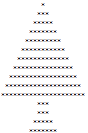
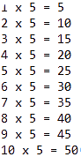
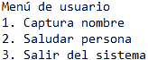
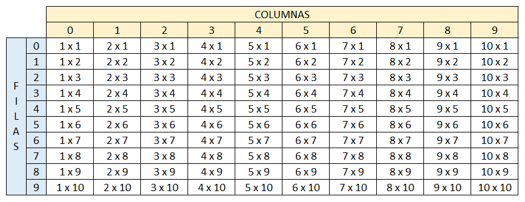

1. Realizar un programa el cual solicite su nombre y apellidos.
Proceso sin_titulo
Definir nombre Como Caracter;
Definir apellido Como Caracter;
Escribir "¿Cuál es su nombre?";
Leer nombre;
Escribir "¿Cuál es su apellido?";
Leer apellido;
Limpiar Pantalla;
Escribir "Mi nombre es: ", nombre," ", apellido;
FinProceso
2. Realizar un programa el cual solicite su nombre, apellidos, edad y estatura.
Proceso sin_titulo
Definir nombre, apellido Como Caracter;
Definir edad Como Entero;
Definir estatura Como Real;
Escribir "¿Cuál es su nombre?";
Leer nombre;
Escribir "¿Cuál es su apellido?";
Leer apellido;
Escribir "¿Qué edad tienes?";
Leer edad;
Escribir "¿Cuál es su estatura?";
Leer estatura;
Limpiar Pantalla;
Escribir "Mi nombre completo es ", nombre, " ", apellido;
Escribir "Tengo ", edad, " años de edad";
Escribir "Mido ", estatura, " metros de estatura";
FinProceso
3. Realizar un programa el cual solicite su nombre y apellidos, también debe capturar nombre y apellidos de su padre y madre.
Proceso sin_titulo
Definir nombre, nombrePadre, apellidoPadre, nombreMadre, apellidoMadre Como Caracter;
Escribir "¿Cuál es su nombre?";
Leer nombre;
Escribir "¿Nombre de su padre?";
Leer nombrePadre;
Escribir "¿Apellido de su padre?";
Leer apellidoPadre;
Escribir "¿Nombre de su madre?";
Leer nombreMadre;
Escribir "¿Apellido de su madre?";
Leer apellidoMadre;
Limpiar Pantalla;
Escribir "Yo ", nombre, " ", apellidoPadre, " ", apellidoMadre,
" soy hijo de ", nombreMadre, " ", apellidoMadre, " y ", nombrePadre, " ", apellidoPadre;
FinProceso
4. Realizar un programa el cual solicite el nombre de una ciudad capital y el país.
Proceso sin_titulo
Definir ciudad, pais Como Caracter;
Escribir "Escribe el nombre de un país";
Leer pais;
Escribir "¿Cuál es su capital?";
Leer ciudad;
Limpiar Pantalla;
Escribir "La ciudad ", ciudad, " es la capital del país ", pais;
FinProceso
5. Realizar un programa el cual solicite el nombre de su mascota, edad de la mascota, el tipo de mascota y su nombre completo.
Proceso sin_titulo
Definir nombreMascota, tipo, nombreDueno Como Caracter;
Definir edad Como Entero;
Escribir "Escriba el nombre de su mascota";
Leer nombreMascota;
Escribir "¿Qué clase de mascota es?";
Leer tipo;
Escribir "¿Qué edad tiene su mascota?";
Leer edad;
Escribir "¿Nombre completo del dueño de la mascota?";
Leer nombreDueno;
Limpiar Pantalla;
Escribir nombreMascota, " es un(a) ", tipo, ", el cual, tiene ", edad, " años de edad y ", nombreDueno, " es actualmente su dueño";
FinProceso
1. Realizar un programa en el cual se solicite la edad de una persona. Si la persona es mayor o igual a 18 años, deberá mostrar en pantalla: Usted es mayor de edad.
Proceso sin_titulo
Definir edad Como Entero;
Escribir "¿Cuál es su edad?";
Leer edad;
Si edad >= 18 Entonces
Escribir "Usted es mayor de edad";
FinSi
FinProceso
2. Realizar un programa en el cual se solicite la edad de una persona. Si la persona es menor a 18 años, deberá mostrar en pantalla: Usted aún es un niño(a).
Proceso sin_titulo
Definir edad Como Entero;
Escribir "¿Cuál es su edad?";
Leer edad;
Si edad < 18 Entonces
Escribir "Usted aún es un niño(a)";
FinSi
FinProceso
3. Realizar un programa en el cual se solicite el nombre, apellidos y edad de la persona. Si la persona es mayor o igual a 18 años, entonce se deberá imprimir en pantalla [Nombre completo] usted es mayor de edad, por lo tanto puede entrar a la fiesta. Si la edad de la persona es menor que 18 años, entonces, deberá imprimirse el siguiente mensaje: [Nombre completo] usted es menor de edad, por lo tanto, no puede entrar a la fiesta, por favor devuélvase a su casa.
Proceso sin_titulo
Definir nombre, apellido Como Caracter;
Definir edad Como Entero;
Escribir "¿Cuál es su nombre?";
Leer nombre;
Escribir "¿Cuál es su apellido?";
Leer apellido;
Escribir "¿Qué edad tienes?";
Leer edad;
Si edad >= 18 Entonces
Escribir nombre, " ", apellido, " usted es mayor de edad, por lo tanto puede entrar a la fiesta";
SiNo
Escribir nombre, " ", apellido, " usted es menor de edad, por lo tanto, no puede entrar a la fiesta, por favor devuélvase a su casa";
FinSi
FinProceso
4. La video tienda que presta sus servicios de alquiler de películas a los usuarios del barrio el Porvenir, requiere de una aplicación que permita registrar el alquiler de las películas que adquieren sus usuarios. Para cada usuario se debe permitir la opción de alquilar película, consultar películas disponibles y recibir película en la video tienda con la opción de realizar anotaciones sobre estas si se llegan a presentar daños u otra novedad sobre la película.
Proceso sin_titulo
Definir anotaciones Como Caracter;
Definir op, op1 Como Entero;
Escribir "Elija una opción: ";
Escribir "1. Alquilar película";
Escribir "2. Consultar películas";
Escribir "3. Recibir película";
Escribir "4. Salir";
Leer op;
Segun op Hacer
1:
Escribir ".:Elige la Película que te guste:.";
Escribir "1. El Aro";
Escribir "2. Los Vengadores";
Escribir "3. Harry Potter";
Escribir "4. Dragon Ball Z";
Escribir "5. Camino Hacia el Terror";
Leer op1;
Segun op1 Hacer
1: Escribir "Alquilaste El Aro";
2: Escribir "Alquilaste Los Vengadores";
3: Escribir "Alquilaste Harry Potter";
4: Escribir "Alquilaste Dragon Ball Z";
5: Escribir "Alquilaste Camino Hacia el Terror";
FinSegun
2:
Escribir ".:Películas Disponibles:.";
Escribir "El Aro";
Escribir "Los Vengadores";
Escribir "Harry Potter";
Escribir "Dragon Ball Z";
Escribir "Camino Hacia el Terror";
3:
Escribir "Anotaciones o novedades sobre la película";
Leer anotaciones;
4:
Escribir "Hasta luego, gracias por visitarnos";
FinSegun
FinProceso
5. La Droguería Mi Salud presta sus servicios en la localidad de Suba y requiere una aplicación para poder facturar los productos que vende a sus clientes y para ello, los productos tienen unas características que deben indicársele al cliente para que pueda escoger el producto a comprar. Para cada cliente, se tienen las opciones de compra de producto, consulta de precios por producto y devoluciones en caso de que se presenten.
Proceso sin_titulo
Definir anotaciones Como Caracter;
Definir op, op1, op2 Como Entero;
Escribir "Elija una opción: ";
Escribir "1. Medicamentos disponibles";
Escribir "2. Precio por medicamento";
Escribir "3. Devolucion de medicamentos";
Escribir "4. Salir";
Leer op;
Segun op Hacer
1:
Escribir ".:Elija su medicamento:.";
Escribir "1. Simvastatina - para controlar el colesterol";
Escribir "2. Omeprazol - para la acidez de estómago";
Escribir "3. Ramipril - para la hipertensión";
Escribir "4. Paracetamol - para aliviar el dolor";
Escribir "5. Salbutamol - para el asma";
Leer op1;
Segun op1 Hacer
1: Escribir "Compraste Simvastatina";
2: Escribir "Compraste Omeprazol";
3: Escribir "Compraste Ramipril";
4: Escribir "Compraste Paracetamol";
5: Escribir "Compraste Salbutamol";
FinSegun
2:
Escribir " Producto ", " Precio ";
Escribir "Simvastatina ", " $5.000 ";
Escribir "Omeprazol", " $12.000 ";
Escribir "Ramipril", " $10.000 ";
Escribir "Paracetamol", " $15.000 ";
Escribir "Salbutamol", " $11.000 ";
3:
Escribir ".:Elija su medicamento a devolver:.";
Escribir "1. Simvastatina";
Escribir "2. Omeprazol";
Escribir "3. Ramipril";
Escribir "4. Paracetamol";
Escribir "5. Salbutamol";
Leer op2;
Segun op2 Hacer
1: Escribir "Devolviste Simvastatina";
2: Escribir "Devolviste Omeprazol";
3: Escribir "Devolviste Ramipril";
4: Escribir "Devolviste Paracetamol";
5: Escribir "Devolviste Salbutamol";
FinSegun
4:
Escribir "!Hasta Luego¡";
FinSegun
FinProceso
6. El taller de motos "El Maquinista" recibe motocicletas de alto cilindraje para realizar las respectivas revisiones y requiere una aplicación que le permita registrar los servicios generados a sus clientes. Para cada motocicleta se debe tener registro del ingreso al taller y las observaciones por parte del cliente. También debe existir registro de salida del taller con las novedades y otra de arreglos hechos por el mecánico en caso de que se requiera inventariar cambios repuestos en la motocicleta al entregarla.
Proceso sin_titulo
Definir observacion, repuesto, repuestos Como Caracter;
Definir op Como Entero;
Escribir "Elija una opción: ";
Escribir "1. Ingresar motocicleta";
Escribir "2. Arreglos mecánico";
Escribir "3. Salir";
Leer op;
Segun op Hacer
1:
Escribir "Para ingresar, Por favor digite observaciones";
Leer observacion;
Escribir "Registro exitoso, Falla: ", "[",observacion,"]";
2:
Escribir "Por favor, ingrese observaciones";
Leer observacion;
Escribir "Usó algun repuesto para la reparación(s/n)";
Leer repuesto;
Si repuesto = "s" Entonces
Escribir "Digite los repuestos que se usó";
Leer repuestos;
Escribir "Para la falla: ", "[",observacion,"]", " se usó los repuestos: ", repuestos;
FinSi
3:
Escribir "!Hasta Luego¡";
FinSegun
FinProceso
7. La Secretaría de Salud Municipal requiere de una aplicación que le permita calcular el IMC (Índice de masa corporal) y requiere los datos peso en kilogramos y estatura en metros Para cada persona encuestada adicional a los datos suministrados, debe mostrar el resultado para cada uno y establecer en qué rango se encuentra (bajo peso, normal, sobrepeso y obeso).
Proceso sin_titulo
Definir peso, estatura, imc Como Real;
Escribir "Ingrese su peso en kilogramos";
Leer peso;
Escribir "Ingrese su estatura en metros";
Leer estatura;
imc <- peso / (estatura)^2;
Escribir "Su índice de masa corporal es: ", imc;
Si imc < 18.5 Entonces
Escribir "Está bajo de peso";
FinSi
Si imc > 18.5 y imc < 24.9 Entonces
Escribir "Tiene un peso Normal";
FinSi
Si imc > 25 y imc < 29.9 Entonces
Escribir "Tiene sobrepeso";
FinSi
Si imc > 30 Entonces
Escribir "Tiene obesidad";
FinSi
FinProceso
8. El pastelero Don Carlos es el mejor pastelero de la ciudad y requiere una aplicación que le permita registrar los pedidos de los clientes en cuanto a las tortas que realiza. Cada torta tiene unas características propias como sabor, cantidad (porciones) y decoraciones). Se requiere que la aplicación permita registrar los pedidos, las tortas disponibles y las ventas que se registren diariamente.
Proceso sin_titulo
Definir op, op1, t1, t2, t3, t4, t5, compra Como Entero;
Escribir "Elija una opción: ";
Escribir "1. Tortas disponibles";
Escribir "2. Salir";
Leer op;
t1 <- 12;
t2 <- 8;
t3 <- 10;
t4 <- 10;
t5 <- 12;
Segun op Hacer
1:
Escribir "Elegir torta";
Escribir "1.Torta mousse de chocolate y baileys ", t1, " Und. disponibles";
Escribir "2.Torta de fresas con crema de vainilla ", t2, " Und. disponibles";
Escribir "3.Torta Cheesecake de Nutella ", t3, " Und. disponibles";
Escribir "4.Torta fácil de hojaldre con fresas y almendra ", t4, " Und. disponibles";
Escribir "5.Torta ganache de chocolate y banano ", t5, " Und. disponibles";
Leer op1;
Segun op1 Hacer
1: Escribir "¿Cuantas Tortas desea?";
Leer compra;
t1 <- t1 - compra;
Escribir "Se vende ", compra, " Torta mousse ", t1, " Und. disponibles";
2: Escribir "¿Cuantas Tortas desea?";
Leer compra;
t2 <- t2 - compra;
Escribir "Se vende ", compra, " Torta de fresas ", t2, " Und. disponibles";
3: Escribir "¿Cuantas Tortas desea?";
Leer compra;
t3 <- t3 - compra;
Escribir "Se vende ", compra, " Torta Cheesecake ", t3, " Und. disponibles";
4: Escribir "¿Cuantas Tortas desea?";
Leer compra;
t4 <- t4 - compra;
Escribir "Se vende ", compra, " Torta fácil de hojaldre ", t4, " Und. disponibles";
5: Escribir "¿Cuantas Tortas desea?";
Leer compra;
t5 <- t5 - compra;
Escribir "Se vende ", compra, " Torta ganache ", t5, " Und. disponibles";
FinSegun
2:
Escribir "!Hasta Luego¡";
FinSegun
FinProceso
9. El profesor de geometría está explicando a sus estudiantes las fórmulas para calcular el área de diferentes figuras geométricas, para ello requiere una aplicación que le facilite el ejercicio solicitándole los valores al estudiante. La aplicación debe permitir que el estudiante seleccione si desea calcular el área de un rectángulo, triángulo o trapecio. No olvide solicitar los datos necesarios para realizar cada cálculo y mostrar su respectivo resultado.
Proceso sin_titulo
Definir op Como Entero;
Definir base, base1, altura, areaRectangulo, areaTriangulo, areaTrapecio Como Real;
Escribir "Elija una opción: ";
Escribir "1. Calcular area rectángulo";
Escribir "2. Calcular area triángulo";
Escribir "3. Calcular area trapecio";
Escribir "4. Salir";
Leer op;
Segun op Hacer
1:
Escribir "Escriba la base del rectángulo: ";
Leer base;
Escribir "Escriba la altura del rectángulo: ";
Leer altura;
areaRectangulo <- base * altura;
Escribir "El area del Rectángulo es: ", areaRectangulo;
2:
Escribir "Escriba la base del triángulo: ";
Leer base;
Escribir "Escriba la altura del triángulo: ";
Leer altura;
areaTriangulo <- (base * altura)/2;
Escribir "El area del triángulo es: ", areaTriangulo;
3:
Escribir "Escriba la base menor del trapecio: ";
Leer base;
Escribir "Escriba la base mayor del trapecio: ";
Leer base1;
Escribir "Escriba la altura del trapecio: ";
Leer altura;
areaTrapecio <- ((base + base1)/2) * altura;
Escribir "El area del trapecio es: ", areaTrapecio;
4:
Escribir "!Hasta Luego¡";
FinSegun
FinProceso
10. El banco "Su banco fiel" es un banco que inicia sus actividades financieras y necesita una aplicación para llevar las cuentas de sus usuarios; por lo tanto, se sugiere que la cuenta tenga los atributos titular y cantidad. Para cada cliente las cuentas permitirán realizar ingresos, retiros o consultas de valor. En los ingresos no se pueden insertar valores
negativos y para los retiros el valor no puede ser mayor al valor que tiene en la cuenta.
Proceso sin_titulo
Definir op Como Entero;
Definir saldo, ingreso, retiro Como Real;
Escribir "Por favor, ingresar saldo";
Leer saldo;
Escribir "Elija una opción: ";
Escribir "1. Ingresar dinero a su cuenta";
Escribir "2. Retirar dinero de su cuenta";
Escribir "3. Consultar saldo";
Escribir "4. Salir";
Leer op;
Segun op Hacer
1:
Escribir "Digite la cantidad a ingresar: ";
Leer ingreso;
Si ingreso >= 0 Entonces
saldo <- saldo + ingreso;
SiNo
Escribir "Saldo incorrecto, digite un valor válido";
FinSi
Escribir "Saldo actual: $", saldo;
2:
Escribir "Digite la cantidad a retirar: ";
Leer retiro;
Si retiro <= saldo y retiro > 0 Entonces
saldo <- saldo - retiro;
SiNo
Escribir "Saldo insuficiente, vuelva a intentarlo";
FinSi
Escribir "Saldo actual: $", saldo;
3:
Escribir "Saldo actual: $", saldo;
4:
Escribir "!Hasta Luego¡";
FinSegun
FinProceso
1. Realizar la siguiente figura por medio del ciclo Para
Proceso sin_titulo
Definir i, j, filas Como Entero;
filas <- 10;
Para i<-1 Hasta filas Con Paso 1 Hacer
Para j<-1 Hasta i Con Paso 1 Hacer
Escribir "*" Sin Saltar;
FinPara
Escribir "";
FinPara
FinProceso
2. Realizar la siguiente figura por medio del ciclo Mientras - Hacer
Proceso sin_titulo
Definir i, j, n, k Como Entero;
n <- 10;
i <- 1;
j <- 9;
k <- 1;
Mientras k <= n Hacer
Mientras i < n Hacer
Escribir ' ' Sin Saltar;
i <- i + 1;
FinMientras
Mientras j < n Hacer
Escribir '*' Sin Saltar;
j <- j + 1;
FinMientras
k <- k + 1;
i <- k;
j <- j - k;
Escribir '';
FinMientras
FinAlgoritmo
3. Realizar la siguiente figura por medio del ciclo Repetir - Hasta Que

Proceso sin_titulo
Definir i, h, j Como Entero;
Definir linea Como Caracter;
i <- 11;
Repetir
h <- 0;
j <- 0;
Repetir
Escribir " " Sin Saltar;
h <- h + 1;
Hasta Que h = i
Repetir
Escribir Sin Saltar "*";
j <- j + 1;
Hasta Que j = 12 - i
j <- 0;
Si i <> 11 Entonces
Repetir
Escribir Sin Saltar "*";
j <- j + 1;
Hasta Que j = 11 - i
FinSi
Escribir "";
i<- i - 1;
Hasta Que i = 0
i <- 10;
Repetir
h <- 0;
j <- 0;
Repetir
Escribir Sin Saltar " ";
h <- h + 1;
Hasta Que h = i
Repetir
Escribir Sin Saltar "*";
j <- j + 1;
Hasta Que j = 12 - i
j <- 0;
Si i <> 11 Entonces
Repetir
Escribir Sin Saltar "*";
j <- j + 1;
Hasta Que j = 11 - i
FinSi
Escribir "";
i<- i - 1;
Hasta Que i = 9
i <- 10;
Repetir
h <- 0;
j <- 0;
Repetir
Escribir Sin Saltar " ";
h <- h + 1;
Hasta Que h = i
Repetir
Escribir Sin Saltar "*";
j <- j + 1;
Hasta Que j = 12 - i
j <- 0;
Si i <> 11 Entonces
Repetir
Escribir Sin Saltar "*";
j <- j + 1;
Hasta Que j = 11 - i
FinSi
Escribir "";
i<- i - 1;
Hasta Que i = 7
FinProceso
4. Se requiere un programa que pueda crear la tabla de multiplicar del número que el usuario indique por medio del ciclo Para; esta debe ser impresa del 1 al 10. Ejemplo, si el usuario indica que desea crear la tabla del 5, entonces el resultado debería ser el siguiente:

Proceso sin_titulo
Definir i, numeroUsuario Como Entero;
Escribir "Escriba el número a multiplicar";
Leer numeroUsuario;
Para i<-1 Hasta 10 Con Paso 1 Hacer
Escribir i, " x ", numeroUsuario, " = ", i*numeroUsuario;
FinPara
FinProceso
5. Utilizando el ciclo que usted desee, crear un menú de ejecución infinita hasta que el usuario desee terminar dicho ciclo.

Proceso sin_titulo
Definir op Como Entero;
Definir nombre Como Caracter;
Repetir
Escribir "Menú de Usuario";
Escribir "1. Capturar nombre";
Escribir "2. Saludar persona";
Escribir "3. Salir del sistema";
Leer op;
Limpiar Pantalla;
Segun op Hacer
1:
Escribir "Por favor, escriba su nombre";
Leer nombre;
2:
Escribir "Hola, ", nombre, " saludos.";
3:
Escribir "!Hasta luego¡";
De Otro Modo:
Escribir "!opción inválida¡";
FinSegun
Hasta Que op = 3;
FinProceso
6. Se está creando una aplicación que va a estar conectada con un prototipo que permita almacenar contactos telefónicos en el dispositivo. Para ello cada contacto debe contener nombre completo, teléfono y organización. Se requiere que la aplicación permita añadir 3 contactos verificando que el número no esté almacenado, buscar contactos almacenados y eliminar contactos si el usuario lo requiere. Recuerde que el sistema debe terminar cuando el usuario así lo indique.
Proceso sin_titulo
Definir op, conteo, telefono Como Entero;
Definir nombres, n1, n2, n3, contactos, c1, c2, c3, empresas, o1, o2, o3 Como Caracter;
op <- 0;
conteo <- 0;
n1 <- "";n2 <- "";n3 <- "";c1 <- "";c2 <- "";c3 <- "";o1 <- "";o2 <- "";o3 <- "";
Mientras op <> 6 Hacer
Escribir "Agenda de contactos, elegir opcion: ";
Escribir "1. Digite nombre completo";
Escribir "2. Digite numero de contacto";
Escribir "3. Digite nombre de empresa";
Escribir "4. Buscar contactos";
Escribir "5. Borrar contactos";
Escribir "6. Salir";
Leer op;
Mientras op = 5 Hacer
Limpiar Pantalla;
n1 <- "sin asignar";
n2 <- "sin asignar";
n3 <- "sin asignar";
c1 <- "sin asignar";
c2 <- "sin asignar";
c3 <- "sin asignar";
o1 <- "sin asignar";
o2 <- "sin asignar";
o3 <- "sin asignar";
Escribir "Contacto n° 1: ", n1, " Telefono: ", c1, " Empresa: ", o1;
Escribir "Contacto n° 2: ", n2, " Telefono: ", c2, " Empresa: ", o2;
Escribir "Contacto n° 3: ", n3, " Telefono: ", c3, " Empresa: ", o3;
Escribir "[ENTER] volver al menu.";
Leer op;
Limpiar Pantalla;
FinMientras
Mientras op = 4 Hacer
Limpiar Pantalla;
Escribir " .:CONTACTOS:.";
Escribir "Contacto n° 1: ", n1, " Telefono: ", c1, " Empresa: ", o1;
Escribir "Contacto n° 2: ", n2, " Telefono: ", c2, " Empresa: ", o2;
Escribir "Contacto n° 3: ", n3, " Telefono: ", c3, " Empresa: ", o3;
Escribir "[ENTER] volver al menu.";
Leer op;
Limpiar Pantalla;
FinMientras
Mientras op = 1 Hacer
Limpiar pantalla;
conteo <- conteo + 1;
Si conteo > 3 Entonces
Escribir "Agenda llena, presionar enter para volver";
op <- 2;
SiNo
Escribir "Escriba nombre completo: ";
FinSi
Leer nombres;
Si conteo = 1 Entonces
n1 <- nombres;
SiNo
Si conteo = 2 Entonces
n2 <- nombres;
SiNo
Si conteo = 3 Entonces
n3 <- nombres;
SiNo
Escribir "Agenda llena, enter para volver";
FinSi
FinSi
Limpiar Pantalla;
FinSi
op <- 7;
FinMientras
Mientras op = 2 Hacer
Limpiar Pantalla;
Escribir " .:CONTACTOS INGRESADOS:.";
Escribir "Contacto n° 1: ", n1, " Telefono: ", c1, " Empresa: ", o1;
Escribir "Contacto n° 2: ", n2, " Telefono: ", c2, " Empresa: ", o2;
Escribir "Contacto n° 3: ", n3, " Telefono: ", c3, " Empresa: ", o3;
Escribir "Ingresar numero de contacto a guardar o [7] volver al menu.";
telefono <- 0;;
Leer telefono;
Si telefono = 1 Entonces
Escribir "Ingresar número telefonico: ";
Leer c1;
Limpiar Pantalla;
Escribir "Contacto guardado: ", n1, " Telefono: ", c1;
SiNo
Si telefono = 2 Entonces
Escribir "Ingresar número telefonico: ";
Leer c2;
Limpiar Pantalla;
Escribir "Contacto guardado: ", n2, " Telefono: ", c2;
SiNo
Si telefono = 3 Entonces
Escribir "Ingresar número telefonico: ";
Leer c3;
Limpiar Pantalla;
Escribir "Contacto guardado: ", n3, " Telefono: ", c3;
SiNo
Si telefono > 3 Entonces
Limpiar Pantalla;
SiNo
Escribir "Opcion inválida";
FinSi
FinSi
FinSi
op <- 7;
FinSi
FinMientras
Mientras op = 3 Hacer
Limpiar Pantalla;
Escribir " .:CONTACTOS INGRESADOS:.";
Escribir "Contacto n° 1: ", n1, " Telefono: ", c1, " Empresa: ", o1;
Escribir "Contacto n° 2: ", n2, " Telefono: ", c2, " Empresa: ", o2;
Escribir "Contacto n° 3: ", n3, " Telefono: ", c3, " Empresa: ", o3;
Escribir "Ingresar numero de contacto a guardarle la empresa o [7] volver al menu.";
telefono <- 0;;
Leer telefono;
Si telefono = 1 Entonces
Escribir "Ingresar nombre de la empresa: ";
Leer o1;
Limpiar Pantalla;
Escribir "Contacto guardado: ", n1, " Telefono: ", c1, " Empresa: ", o1;
SiNo
Si telefono = 2 Entonces
Escribir "Ingresar nombre de la empresa: ";
Leer o2;
Limpiar Pantalla;
Escribir "Contacto guardado: ", n2, " Telefono: ", c2, " Empresa: ", o2;
SiNo
Si telefono = 3 Entonces
Escribir "Ingresar nombre de la empresa: ";
Leer o3;
Limpiar Pantalla;
Escribir "Contacto guardado: ", n3, " Telefono: ", c3, " Empresa: ", o3;
SiNo
Si telefono > 3 Entonces
Limpiar Pantalla;
SiNo
Escribir "Opcion inválida";
FinSi
FinSi
FinSi
op <- 7;
FinSi
FinMientras
FinMientras
FinProceso
7. El parqueadero "El guardián" presta sus servicios de parqueadero nocturno para los usuarios del barrio y requiere una aplicación que permita registrar los vehículos que se cuidan en estas instalaciones. Se sugiere que el parqueadero tenga los atributos del vehículo como son, placa y marca, y los datos del cliente como son nombre completo y número de teléfono. Para cada vehículo se debe permitir la opción de ingresar al parqueadero, retirar del parqueadero y consultar si un vehículo se encuentra en el parqueadero. Recuerde que el sistema debe terminar cuando el usuario
así lo indique. Tenga en presente que el parqueadero solo puede almacenar máximo 5 vehículos.
Proceso sin_titulo
Definir n1,n2,n3,n4,n5,p1,p2,p3,p4,p5,m1,m2,m3,m4,m5,t1,t2,t3,t4,t5, usuario, consulta, retiro, vacio Como Caracter;
Definir op, i Como Entero;
Definir conteo Como Logico;
conteo <- Verdadero;
vacio <- "sin datos";
Repetir
Escribir " .:PARQUEADERO:. ";
Escribir "1. Ingresar vehículo";
Escribir "2. Retirar vehículo";
Escribir "3. Consultar por placa";
Escribir "4. Salir";
Leer op;
Limpiar Pantalla;
Segun op Hacer
1:
i <- 0;
Repetir
Escribir "Ingresar nombre completo: ";
Escribir "Ingresar número de placa: ";
Escribir "Ingresar marca de la moto: ";
Escribir "Ingresar numero telefónico: ";
Escribir "¿Desea ingresar otro usuario?(si/no): ";
i <- i + 1;
Si i = 1 Entonces
Leer n1;
Leer p1;
Leer m1;
Leer t1;
Leer usuario;
SiNo
Si i = 2 Entonces
Leer n2;
Leer p2;
Leer m2;
Leer t2;
Leer usuario;
SiNo
Si i = 3 Entonces
Leer n3;
Leer p3;
Leer m3;
Leer t3;
Leer usuario;
SiNo
Si i = 4 Entonces
Leer n4;
Leer p4;
Leer m4;
Leer t4;
Leer usuario;
SiNo
Si i = 5 Entonces
Leer n5;
Leer p5;
Leer m5;
Leer t5;
Leer usuario;
FinSi
FinSi
FinSi
FinSi
FinSi
Limpiar Pantalla;
Hasta Que usuario = "no" o i = 5;
2:
Escribir " .:RETIRAR VEHICULO:.";
Escribir "Ingresar placa del vehículo: ";
Leer retiro;
Si retiro = p1 Entonces
Escribir n1, "¡Vehículo retirado!";
n1 <- vacio;
p1 <- vacio;
m1 <- vacio;
t1 <- vacio;
Escribir "Hasta luego";
SiNo
Si retiro = p2 Entonces
Escribir n2, "¡Vehículo retirado!";
n2 <- vacio;
p2 <- vacio;
m2 <- vacio;
t2 <- vacio;
Escribir "Hasta luego";
SiNo
Si retiro = p3 Entonces
Escribir n3, "¡Vehículo retirado!";
n3 <- vacio;
p3 <- vacio;
m3 <- vacio;
t3 <- vacio;
Escribir "Hasta luego";
SiNo
Si retiro = p4 Entonces
Escribir n4, "¡Vehículo retirado!";
n4 <- vacio;
p4 <- vacio;
m4 <- vacio;
t4 <- vacio;
Escribir "Hasta luego";
SiNo
Si retiro = p5 Entonces
Escribir n5, "¡Vehículo retirado!";
n5 <- vacio;
p5 <- vacio;
m5 <- vacio;
t5 <- vacio;
Escribir "Hasta luego";
FinSi
FinSi
FinSi
FinSi
FinSi
Escribir "";
3:
Escribir " .:CONSULTA POR PLACA:.";
Escribir " Ingresar placa: ";
Leer consulta;
Si consulta = p1 Entonces
Escribir "Nombre: ", n1, " Marca: ", m1, " Placa: ", p1, " Teléfono: ", t1;
SiNo
Si consulta = p2 Entonces
Escribir "Nombre: ", n2, " Marca: ", m2, " Placa: ", p2, " Teléfono: ", t2;
SiNo
Si consulta = p3 Entonces
Escribir "Nombre: ", n3, " Marca: ", m3, " Placa: ", p3, " Teléfono: ", t3;
SiNo
Si consulta = p4 Entonces
Escribir "Nombre: ", n4, " Marca: ", m4, " Placa: ", p4, " Teléfono: ", t4;
SiNo
Si consulta = p5 Entonces
Escribir "Nombre: ", n5, " Marca: ", m5, " Placa: ", p5, " Teléfono: ", t5;
SiNo
Escribir "número de placa inválido";
FinSi
FinSi
FinSi
FinSi
FinSi
Escribir "";
4:
Escribir "Hasta luego, Gracias por usar nuestro servicio";
conteo <- Falso;
De Otro Modo:
Escribir "Opción inválida";
FinSegun
Hasta Que conteo = Falso;
FinProceso
8. La escuela automovilística "El Maestro" requiere una aplicación que permita registrar a sus clientes en los cursos de enseñanza automovilística y establecer quienes lo han aprobado para continuar con el trámite de adquirir la licencia de conducción. Para cada usuario se debe permitir registrar su ingreso al curso, consultar usuarios que hayan presentado el curso y resultados de la prueba del curso (si fueron aprobados o no). Recuerde que el sistema debe terminar cuando el usuario así lo indique. Tenga presente que la escuela tiene capacidad máxima de gestionar 8 usuarios en su totalidad.
Proceso sin_titulo
Definir p1,p2,p3,p4,p5,p6,p7,p8 Como Caracter;
Definir n1,n2,n3,n4,n5,n6,n7,n8 Como Caracter;
Definir r1,r2,r3,r4,r5,r6,r7,r8 Como Caracter;
Definir op1,op2,i Como Entero;
op1<- 0;
p1<-"";p2<-"";p3<-"";p4<-"";p5<-"";p6<-"";p7<-"";p8<-"";
n1<-"";n2<-"";n3<-"";n4<-"";n5<-"";n6<-"";n7<-"";n8<-"";
r1<-"";r2<-"";r3<-"";r4<-"";r5<-"";r6<-"";r7<-"";r8<-"";
Mientras op1 <> 3 Hacer
Escribir " .:MENU USUARIO:.";
Escribir "1. Ingresar aprendiz";
Escribir "2. Consulta de usuarios que presentaron prueba";
Escribir "3. Salir del sistema";
Leer op1;
Si op1 = 1 Entonces
Escribir "Hay ocho cupos, elige uno: ";
Escribir "[1,2,3,4,5,6,7,8]";
Leer op2;
Segun op2 Hacer
1:
Escribir "Escriba nombre del aprendiz: ";
Leer n1;
Escribir "¿Presentaste la prueba? (si o no)";
Leer p1;
Limpiar Pantalla;
Si p1 = "si" Entonces
Escribir "por favor escriba el resultado: (aprobo o reprobo)";
Leer r1;
FinSi
2:
Escribir "Escriba nombre del aprendiz: ";
Leer n2;
Escribir "¿Presentaste la prueba? (si o no)";
Leer p2;
Limpiar Pantalla;
Si p2 = "si" Entonces
Escribir "por favor escriba el resultado: (aprobo o reprobo)";
Leer r2;
FinSi
3:
Escribir "Escriba nombre del aprendiz: ";
Leer n3;
Escribir "¿Presentaste la prueba? (si o no)";
Leer p3;
Limpiar Pantalla;
Si p3 = "si" Entonces
Escribir "por favor escriba el resultado: (aprobo o reprobo)";
Leer r3;
FinSi
4:
Escribir "Escriba nombre del aprendiz: ";
Leer n4;
Escribir "¿Presentaste la prueba? (si o no)";
Leer p4;
Limpiar Pantalla;
Si p4 = "si" Entonces
Escribir "por favor escriba el resultado: (aprobo o reprobo)";
Leer r4;
FinSi
5:
Escribir "Escriba nombre del aprendiz: ";
Leer n5;
Escribir "¿Presentaste la prueba? (si o no)";
Leer p5;
Limpiar Pantalla;
Si p5 = "si" Entonces
Escribir "por favor escriba el resultado: (aprobo o reprobo)";
Leer r5;
FinSi
6:
Escribir "Escriba nombre del aprendiz: ";
Leer n6;
Escribir "¿Presentaste la prueba? (si o no)";
Leer p6;
Limpiar Pantalla;
Si p6 = "si" Entonces
Escribir "por favor escriba el resultado: (aprobo o reprobo)";
Leer r6;
FinSi
7:
Escribir "Escriba nombre del aprendiz: ";
Leer n7;
Escribir "¿Presentaste la prueba? (si o no)";
Leer p7;
Limpiar Pantalla;
Si p7 = "si" Entonces
Escribir "por favor escriba el resultado: (aprobo o reprobo)";
Leer r7;
FinSi
8:
Escribir "Escriba nombre del aprendiz: ";
Leer n8;
Escribir "¿Presentaste la prueba? (si o no)";
Leer p8;
Limpiar Pantalla;
Si p8 = "si" Entonces
Escribir "por favor escriba el resultado: (aprobo o reprobo)";
Leer r8;
FinSi
De Otro Modo:
Limpiar Pantalla;
Escribir "opción inválida";
FinSegun
FinSi
Limpiar Pantalla;
Si op1 = 2 Entonces
Si p1 = "si" Entonces
Escribir n1,", Resultado de la prueba es: ", r1;
FinSi
Si p2 = "si" Entonces
Escribir n2,", Resultado de la prueba es: ", r2;
FinSi
Si p3 = "si" Entonces
Escribir n3,", Resultado de la prueba es: ", r3;
FinSi
Si p4 = "si" Entonces
Escribir n4,", Resultado de la prueba es: ", r4;
FinSi
Si p5 = "si" Entonces
Escribir n5,", Resultado de la prueba es: ", r5;
FinSi
Si p6 = "si" Entonces
Escribir n6,", Resultado de la prueba es: ", r6;
FinSi
Si p7 = "si" Entonces
Escribir n7,", Resultado de la prueba es: ", r7;
FinSi
Si p8 = "si" Entonces
Escribir n8,", Resultado de la prueba es: ", r8;
FinSi
FinSi
FinMientras
FinProceso
1. Crear un vector de tipo Entero con 5 posiciones, llenarlo con información solicitada al usuario. Después de recoger toda la información, se requiere imprimir el índice de cada posición en el arreglo con su valor de la siguiente manera:
[0] = 55
[1] = 99
[2] = 11
[3] = 56
[4] = 69
Proceso sin_titulo
Definir i, vector Como Entero;
Dimension vector[5];
Escribir "Digite número en la pocisión 1:";
Leer vector[0];
Escribir "Digite número en la pocisión 2:";
Leer vector[1];
Escribir "Digite número en la pocisión 3:";
Leer vector[2];
Escribir "Digite número en la pocisión 4:";
Leer vector[3];
Escribir "Digite número en la pocisión 5:";
Leer vector[4];
Limpiar Pantalla;
Para i<-0 Hasta 4 Con Paso 1 Hacer
Escribir "[",i,"]", " = ",vector[i];
FinPara
FinProceso
2. Crear un arreglo de números enteros de 20 posiciones, el cual, debe ser llenado con números aleatorios entre 1 y 100; después de haber llenado dicho arreglo, se debe volver a recorrer utilizando un ciclo diferente al que se usó para llenarse e imprimir los números pares e impares. Ejemplo
Números pares: 2, 4, 6, 8, 10
Números impares: 1, 3, 5, 7, 9
Proceso sin_titulo
Definir i,j, k, arreglo Como Entero;
Dimension arreglo[20];
Para i<-1 Hasta 19 Con Paso 1 Hacer
arreglo[i] <- azar(100);
FinPara
Escribir Sin Saltar "Números pares: ";
Para j<-1 Hasta 19 Con Paso 1 Hacer
Si arreglo[j] % 2 = 0 Entonces
Escribir Sin Saltar arreglo[j], ", ";
SiNo
FinSi
FinPara
Escribir "";
Escribir Sin Saltar "Números impares: ";
Para j<-1 Hasta 19 Con Paso 1 Hacer
Si arreglo[j] % 2 <> 0 Entonces
Escribir Sin Saltar arreglo[j], ", ";
SiNo
FinSi
FinPara
Escribir "";
FinProceso
3. Imprimir los números primos del 1 al 1000, el resultado debe ser buscado de forma matemática.
Proceso sin_titulo
Definir p, num, contador Como Entero;
Escribir " .:NUMEROS PRIMOS DE 1 A 1000:.";
Para num<-1 Hasta 1000 Hacer
p <- 1;
contador <- 0;
Mientras p <= num Hacer
Si num % p == 0 Entonces
contador <- contador + 1;
FinSi
p <- p + 1;
FinMientras
Si contador == 2 Entonces
Escribir Sin Saltar num, ", ";
FinSi
FinPara
FinProceso
4. Dada la siguiente matriz bidimensional, el cual debe de quemar en el código
01 02 03 04 05
06 07 08 09 10
11 12 13 14 15
16 17 18 19 20
Utilizando el conocimiento adquirido, a excepción de hacerlo de forma manual, imprima la siguiente matriz bidimensional.
01 02 03 04 05
10 09 08 07 06
11 12 13 14 15
20 19 18 17 16
Proceso sin_titulo
Definir matriz, matriz1, fila, columna, f, c, contador Como Entero;
Dimension matriz1[4,5];
Dimension matriz[4, 5];
contador <- 0;
matriz[0,0] <- 01;
matriz[0,1] <- 02;
matriz[0,2] <- 03;
matriz[0,3] <- 04;
matriz[0,4] <- 05;
matriz[1,0] <- 10;
matriz[1,1] <- 09;
matriz[1,2] <- 08;
matriz[1,3] <- 07;
matriz[1,4] <- 06;
matriz[2,0] <- 11;
matriz[2,1] <- 12;
matriz[2,2] <- 13;
matriz[2,3] <- 14;
matriz[2,4] <- 15;
matriz[3,0] <- 20;
matriz[3,1] <- 19;
matriz[3,2] <- 18;
matriz[3,3] <- 17;
matriz[3,4] <- 16;
Para f<-0 Hasta 3 Hacer
Para c<-0 Hasta 4 Hacer
contador <- contador + 1;
matriz1[f, c] <- contador;
FinPara
FinPara
Para f<-0 Hasta 3 Hacer
Para c<-0 Hasta 4 Hacer
Escribir Sin Saltar matriz1[f, c], " ";
FinPara
Escribir "";
FinPara
Escribir "----------------";
Para fila<-0 Hasta 3 Hacer
Para columna<-0 Hasta 4 Hacer
Escribir Sin Saltar matriz[fila, columna], " ";
FinPara
Escribir "";
FinPara
FinProceso
5. Se debe de imprimir el siguiente cuadro

El usuario deberá insertar la fila y columna de la cual desea ver el resultado, el resultado de cada celda debe estar previamente calculado en una matriz bidimensional la cual cada resultado obedecerá a la fila y columna insertada por el usuario.
Proceso sin_titulo
Definir f, c, tabla, fu, cu Como Entero;
Dimension tabla[11, 11];
Para f<-1 Hasta 10 Hacer
Para c<-1 Hasta 10 Hacer
tabla[f, c] <- (f * c);
FinPara
FinPara
Para f<-1 Hasta 10 Hacer
Para c<-1 Hasta 10 Hacer
Escribir Sin Saltar c, " x ", f, " ";
FinPara
Escribir "";
FinPara
Escribir "Ingresar fila: ";
Leer fu;
Escribir "Ingresar columna";
Leer cu;
Escribir "El número es: ", tabla[fu,cu];
FinProceso
1. Realizar un programa el cual solicite su nombre y apellidos.
import java.util.Scanner;
public class Uno {
public static void main(String[] args) {
String nombre, apellido;
Scanner input = new Scanner(System.in);
System.out.println("¿Cuál es su nombre?");
nombre = input.next();
System.out.println("¿Cuál es su apellido?");
apellido = input.next();
System.out.println("Mi nombre es: "+nombre+" "+apellido);
}
}
2. Realizar un programa el cual solicite su nombre, apellidos, edad y estatura.
import java.util.Scanner;
public class Dos {
public static void main(String[] args) {
String nombre, apellido;
int edad;
double estatura;
Scanner input = new Scanner(System.in);
System.out.println("¿Cuál es su nombre?");
nombre = input.next();
System.out.println("¿Cuál es su apellido?");
apellido = input.next();
System.out.println("¿Qué edad tienes?");
edad = input.nextInt();
System.out.println("¿Cuál es su estatura?");
estatura = input.nextDouble();
System.out.println();
System.out.println("Mi nombre completo es "+nombre+" "+apellido+"\n"+
"Tengo "+edad+" años de edad"+"\n"+
"Mido "+estatura+" metros de estatura");
}
}
3. Realizar un programa el cual solicite su nombre y apellidos, también debe capturar nombre y apellidos de su padre y madre.
import java.util.Scanner;
public class Tres {
public static void main(String[] args) {
String nombre, nombrePadre, apellidoPadre, nombreMadre, apellidoMadre;
Scanner input = new Scanner(System.in);
System.out.println("¿Cuál es su nombre?");
nombre = input.next();
System.out.println("¿Nombre de su padre?");
nombrePadre = input.next();
System.out.println("¿Apellido de su padre?");
apellidoPadre = input.next();
System.out.println("¿Nombre de su madre?");
nombreMadre = input.next();
System.out.println("¿Apellido de su madre?");
apellidoMadre = input.next();
System.out.println();
System.out.println("Yo "+ nombre+ " "+ apellidoPadre+ " "+
apellidoMadre+ " soy hijo de "+ nombreMadre+ " "+ apellidoMadre+ " y "+
nombrePadre+ " "+ apellidoPadre);
}
}
4. Realizar un programa el cual solicite el nombre de una ciudad capital y el país.
import java.util.Scanner;
public class Cuatro {
public static void main(String[] args) {
String ciudad, pais;
Scanner input = new Scanner(System.in);
System.out.println("Escribe el nombre de un país");
pais = input.next();
System.out.println("¿Cuál es su capital?");
ciudad = input.next();
System.out.println();
System.out.println("La ciudad "+ ciudad+ " es la capital del país "+ pais);
}
}
5. Realizar un programa el cual solicite el nombre de su mascota, edad de la mascota, el tipo de mascota y su nombre completo.
import java.util.Scanner;
public class Cinco {
public static void main(String[] args) {
String nombreMascota, tipo, nombreDueno;
int edad;
Scanner input = new Scanner(System.in);
System.out.println("¿Cuál es el nombre de su mascota?");
nombreMascota = input.next();
System.out.println("¿Que raza de mascota es?");
tipo = input.next();
System.out.println("¿Qué edad tiene su mascota?");
edad = input.nextInt();
System.out.println("¿Nombre completo del dueño de la mascota?");
nombreDueno = input.next();
System.out.println();
System.out.println(nombreMascota+ " es un(a) "+ tipo+
" el cual tiene "+ edad+ " años de edad y "+ nombreDueno+
" es actualmente su dueño");
}
}
1. Realizar un programa en el cual se solicite la edad de una persona. Si la persona es mayor o igual a 18 años, deberá mostrar en pantalla: Usted es mayor de edad.
import java.util.Scanner;
public class Uno {
public static void main(String[] args) {
int edad;
Scanner input = new Scanner(System.in);
System.out.println("¿Cuál es su edad?");
edad = input.nextInt();
if (edad >= 18) {
System.out.println("Usted es mayor de edad");
}
}
}
2. Realizar un programa en el cual se solicite la edad de una persona. Si la persona es menor a 18 años, deberá mostrar en pantalla: Usted aún es un niño(a).
import java.util.Scanner;
public class Dos {
public static void main(String[] args) {
int edad;
Scanner input = new Scanner(System.in);
System.out.println("¿Cuál es su edad?");
edad = input.nextInt();
if (edad < 18) {
System.out.println("Usted aún es un niño(a)");
}
}
}
3. Realizar un programa en el cual se solicite el nombre, apellidos y edad de la persona. Si la persona es mayor o igual a 18 años, entonce se deberá imprimir en pantalla [Nombre completo] usted es mayor de edad, por lo tanto puede entrar a la fiesta. Si la edad de la persona es menor que 18 años, entonces, deberá imprimirse el siguiente mensaje: [Nombre completo] usted es menor de edad, por lo tanto, no puede entrar a la fiesta, por favor devuélvase a su casa.
import java.util.Scanner;
public class Tres {
public static void main(String[] args) {
String nombre, apellido;
int edad;
Scanner input = new Scanner(System.in);
System.out.println("¿Cuál es su nombre?");
nombre = input.next();
System.out.println("¿Cuál es su apellido?");
apellido = input.next();
System.out.println("¿Cuál es su edad?");
edad = input.nextInt();
if (edad >= 18) {
System.out.println(nombre+ " "+ apellido+ " usted es mayor de edad, por lo tanto puede entrar a la fiesta");
}else {
System.out.println(nombre+ " "+ apellido+ " usted es menor de edad, por lo tanto, no puede entrar a la fiesta, por favor devuélvase a su casa");
}
}
}
4. La video tienda que presta sus servicios de alquiler de películas a los usuarios del barrio el Porvenir, requiere de una aplicación que permita registrar el alquiler de las películas que adquieren sus usuarios. Para cada usuario se debe permitir la opción de alquilar película, consultar películas disponibles y recibir película en la video tienda con la opción de realizar anotaciones sobre estas si se llegan a presentar daños u otra novedad sobre la película.
import java.util.Scanner;
public class Cuatro {
public static void main(String[] args) {
String anotaciones;
int op, op1;
Scanner input = new Scanner(System.in);
System.out.println("Elija una opción: ");
System.out.println("1. Alquilar película");
System.out.println("2. Consultar películas");
System.out.println("3. Recibir película");
System.out.println("4. Salir");
op = input.nextInt();
switch (op) {
case 1:
System.out.println(" .:Elije la película:. ");
System.out.println("1. El Aro");
System.out.println("2. Los Vengadores");
System.out.println("3. Harry Potter");
System.out.println("4. Dragon Ball Z");
System.out.println("5. Camino Hacia el Terror");
op1 = input.nextInt();
if (op1 == 1) {
System.out.println("Alquilaste El Aro");
}else if (op1 == 2) {
System.out.println("Alquilaste Los Vengadores");
}else if (op1 == 3) {
System.out.println("Alquilaste Harry Potter");
}else if (op1 == 4) {
System.out.println("Alquilaste Dragon Ball Z");
}else if (op1 == 5) {
System.out.println("Alquilaste Camino Hacia el Terror");
}
break;
case 2:
System.out.println(" .:Películas Disponibles:. ");
System.out.println("El Aro");
System.out.println("Los Vengadores");
System.out.println("Harry Potter");
System.out.println("Dragon Ball Z");
System.out.println("Camino Hacia el Terror");
break;
case 3:
System.out.println("Anotaciones o novedades sobre la película");
anotaciones = input.next();
System.out.println("novedades guardadas...");
break;
case 4:
System.out.println("Hasta luego, gracias por visitarnos");
}
}
}
5. La Droguería Mi Salud presta sus servicios en la localidad de Suba y requiere una aplicación para poder facturar los productos que vende a sus clientes y para ello, los productos tienen unas características que deben indicársele al cliente para que pueda escoger el producto a comprar. Para cada cliente, se tienen las opciones de compra de producto, consulta de precios por producto y devoluciones en caso de que se presenten.
import java.util.Scanner;
public class Cinco {
public static void main(String[] args) {
int op, op1, op2;
Scanner input = new Scanner(System.in);
System.out.println("Elija una opción: ");
System.out.println("1. Medicamentos disponibles");
System.out.println("2. Precios de medicamentos");
System.out.println("3. Devolución de medicamentos");
System.out.println("4. Salir");
op = input.nextInt();
switch (op) {
case 1:
System.out.println(" .:Elija su medicamento:. ");
System.out.println("1. Simvastatina - para controlar el colesterol");
System.out.println("2. Omeprazol - para la acidez de estómago");
System.out.println("3. Ramipril - para la hipertensión");
System.out.println("4. Paracetamol - para aliviar el dolor");
System.out.println("5. Salbutamol - para el asma");
op1 = input.nextInt();
if (op1 == 1) {
System.out.println("Compraste Simvastatina");
}else if (op1 == 2) {
System.out.println("Compraste Omeprazol");
}else if (op1 == 3) {
System.out.println("Compraste Ramipril");
}else if (op1 == 4) {
System.out.println("Compraste Paracetamol");
}else if (op1 == 5) {
System.out.println("Compraste Salbutamol");
}
break;
case 2:
System.out.println(" Producto "+ " Precio ");
System.out.println("Simvastatina "+ " $5.000 ");
System.out.println("Omeprazol"+ " $12.000 ");
System.out.println("Ramipril"+ " $10.000 ");
System.out.println("Paracetamol"+ " $15.000 ");
System.out.println("Salbutamol"+ " $11.000 ");
break;
case 3:
System.out.println(".:Elija medicamento a devolver:. ");
System.out.println("1. Simvastatina");
System.out.println("2. Omeprazol");
System.out.println("3. Ramipril");
System.out.println("4. Paracetamol");
System.out.println("5. Salbutamol");
op2 = input.nextInt();
if (op2 == 1) {
System.out.println("Devolviste Simvastatina");
}else if (op2 == 2) {
System.out.println("Devolviste Omeprazol");
}else if (op2 == 3) {
System.out.println("Devolviste Ramipril");
}else if (op2 == 4) {
System.out.println("Devolviste Paracetamol");
}else if (op2 == 5) {
System.out.println("Devolviste Salbutamol");
}
break;
case 4:
System.out.println("!Hasta Luego¡");
}
}
}
6. El taller de motos "El Maquinista" recibe motocicletas de alto cilindraje para realizar las respectivas revisiones y requiere una aplicación que le permita registrar los servicios generados a sus clientes. Para cada motocicleta se debe tener registro del ingreso al taller y las observaciones por parte del cliente. También debe existir registro de salida del taller con las novedades y otra de arreglos hechos por el mecánico en caso de que se requiera inventariar cambios repuestos en la motocicleta al entregarla.
import java.util.Scanner;
public class Seis {
public static void main(String[] args) {
String observacion, repuesto, repuestos;
int op;
Scanner input = new Scanner(System.in);
System.out.println("Elija una opción: ");
System.out.println("1. Ingresar motocicleta");
System.out.println("2. Arreglos mecánico");
System.out.println("3. Salir");
op = input.nextInt();
switch (op) {
case 1:
System.out.println("Para ingresar, Por favor digite la falla");
observacion = input.next();
System.out.println("Registro exitoso de las falla...");
break;
case 2:
System.out.println("Por favor, ingrese observaciones");
observacion = input.next();
System.out.println("Usó algun repuesto para la reparación(si/no)");
repuesto = input.next();
if (repuesto.equals("si")) {
System.out.println("Escriba los repuestos que usó");
repuestos = input.next();
System.out.println("Para la falla: "+ "["+observacion+"]"+ " se usó los repuestos: "+ repuestos);
}
break;
case 3:
System.out.println("!Hasta Luego¡");
}
}
}
7. La Secretaría de Salud Municipal requiere de una aplicación que le permita calcular el IMC (Índice de masa corporal) y requiere los datos peso en kilogramos y estatura en metros Para cada persona encuestada adicional a los datos suministrados, debe mostrar el resultado para cada uno y establecer en qué rango se encuentra (bajo peso, normal, sobrepeso y obeso).
import java.util.Scanner;
public class Siete {
public static void main(String[] args) {
double peso, estatura, imc;
Scanner input = new Scanner(System.in);
System.out.println("Ingrese su peso en kilogramos");
peso = input.nextDouble();
System.out.println("Ingrese su estatura en metros");
estatura = input.nextDouble();
imc = peso / Math.pow(estatura, 2);
System.out.println("Su índice de masa corporal es: "+ imc);
if (imc < 18.5) {
System.out.println("Está bajo de peso");
}
if (imc > 18.5 & imc < 24.9) {
System.out.println("Tiene un peso Normal");
}
if (imc > 25 & imc < 29.9) {
System.out.println("Tiene sobrepeso");
}
if (imc > 30) {
System.out.println("Tiene obesidad");
}
}
}
8. El pastelero Don Carlos es el mejor pastelero de la ciudad y requiere una aplicación que le permita registrar los pedidos de los clientes en cuanto a las tortas que realiza. Cada torta tiene unas características propias como sabor, cantidad (porciones) y decoraciones). Se requiere que la aplicación permita registrar los pedidos, las tortas disponibles y las ventas que se registren diariamente.
import java.util.Scanner;
public class Ocho {
public static void main(String[] args) {
int op, op1, t1, t2, t3, t4, t5, compra;
Scanner input = new Scanner(System.in);
System.out.println("Elija una opción: ");
System.out.println("1. Tortas disponibles");
System.out.println("2. Salir");
op = input.nextInt();
t1=10;t2=8;t3=10;t4=10;t5=12;
switch (op) {
case 1:
System.out.println("Elegir torta");
System.out.println("1.Torta mousse de chocolate y baileys "+ t1+ " Und. disponibles");
System.out.println("2.Torta de fresas con crema de vainilla "+ t2+ " Und. disponibles");
System.out.println("3.Torta Cheesecake de Nutella "+ t3+ " Und. disponibles");
System.out.println("4.Torta fácil de hojaldre con fresas y almendra "+ t4+ " Und. disponibles");
System.out.println("5.Torta ganache de chocolate y banano "+ t5+ " Und. disponibles");
op1 = input.nextInt();
System.out.println("¿Cuántas tortas desea?");
compra = input.nextInt();
if (op1 == 1) {
t1 = t1 - compra;
System.out.println("Se vende "+ compra+ " Torta mousse "+ t1+ " Und. disponibles");
}
if (op1 == 2) {
t2 = t2 - compra;
System.out.println("Se vende "+ compra+ " Torta mousse "+ t2+ " Und. disponibles");
}
if (op1 == 3) {
t3 = t3 - compra;
System.out.println("Se vende "+ compra+ " Torta mousse "+ t3+ " Und. disponibles");
}
if (op1 == 4) {
t4 = t4 - compra;
System.out.println("Se vende "+ compra+ " Torta mousse "+ t4+ " Und. disponibles");
}
if (op1 == 5) {
t5 = t5 - compra;
System.out.println("Se vende "+ compra+ " Torta mousse "+ t5+ " Und. disponibles");
}
break;
case 2:
System.out.println("!Hasta Luego¡");
}
}
}
9. El profesor de geometría está explicando a sus estudiantes las fórmulas para calcular el área de diferentes figuras geométricas, para ello requiere una aplicación que le facilite el ejercicio solicitándole los valores al estudiante. La aplicación debe permitir que el estudiante seleccione si desea calcular el área de un rectángulo, triángulo o trapecio. No olvide solicitar los datos necesarios para realizar cada cálculo y mostrar su respectivo resultado.
import java.util.Scanner;
public class Nueve {
public static void main(String[] args) {
int op;
double base, base1, altura, areaRectangulo, areaTriangulo, areaTrapecio;
Scanner input = new Scanner(System.in);
System.out.println("Elija una opción: ");
System.out.println("1. Calcular area rectángulo");
System.out.println("2. Calcular area triángulo");
System.out.println("3. Calcular area trapecio");
System.out.println("4. Salir");
op = input.nextInt();
switch (op) {
case 1:
System.out.println("Escriba la base del rectángulo: ");
base = input.nextDouble();
System.out.println("Escriba la altura del rectángulo: ");
altura = input.nextDouble();
areaRectangulo = (base * altura);
System.out.println("El area del Rectángulo es: "+ areaRectangulo);
break;
case 2:
System.out.println("Escriba la base del triángulo: ");
base = input.nextDouble();
System.out.println("Escriba la altura del triángulo: ");
altura = input.nextDouble();
areaTriangulo = (base * altura) / 2;
System.out.println("El area del triángulo es: "+ areaTriangulo);
break;
case 3:
System.out.println("Escriba la base menor del trapecio: ");
base = input.nextDouble();
System.out.println("Escriba la base mayor del trapecio: ");
base1 = input.nextDouble();
System.out.println("Escriba la altura del trapecio: ");
altura = input.nextDouble();
areaTrapecio = ((base + base1)/2) * altura;
System.out.println("El area del trapecio es: "+ areaTrapecio);
break;
case 4:
System.out.println("!Hasta Luego¡");
break;
}
}
}
10. El banco "Su banco fiel" es un banco que inicia sus actividades financieras y necesita una aplicación para llevar las cuentas de sus usuarios; por lo tanto, se sugiere que la cuenta tenga los atributos titular y cantidad. Para cada cliente las cuentas permitirán realizar ingresos, retiros o consultas de valor. En los ingresos no se pueden insertar valores
negativos y para los retiros el valor no puede ser mayor al valor que tiene en la cuenta.
import java.util.Scanner;
public class Diez {
public static void main(String[] args) {
int op;
double saldo, ingreso, retiro;
Scanner input = new Scanner(System.in);
System.out.println("Por favor, ingresar saldo");
saldo = input.nextDouble();
System.out.println("Elija una opción: ");
System.out.println("1. Ingresar dinero a su cuenta");
System.out.println("2. Retirar dinero de su cuenta");
System.out.println("3. Consultar saldo");
System.out.println("4. Salir");
op = input.nextInt();
switch (op) {
case 1:
System.out.println("Digite cantidad a ingresar: ");
ingreso = input.nextDouble();
if (ingreso >= 0) {
saldo = saldo + ingreso;
}else {
System.out.println("Saldo incorrecto, digite un valor válido");
}
System.out.println("Saldo actual: $"+ saldo);
break;
case 2:
System.out.println("Digite cantidad a retirar: ");
retiro = input.nextDouble();
if (retiro <= saldo & retiro > 0) {
saldo = saldo - retiro;
}else{
System.out.println("Saldo insuficiente, vuelva a intentarlo");
}
break;
case 3:
System.out.println("Saldo actual: $"+ saldo);
break;
case 4:
System.out.println("!Hasta Luego¡");
}
}
}
1. Realizar la siguiente figura por medio del ciclo Para
public class Uno {
public static void main(String[] args) {
int filas = 11;
for (int i = 0; i < filas; i++) {
for (int j = 0; j < i; j++) {
System.out.print("*");
}
System.out.println("");
}
}
}
2. Realizar la siguiente figura por medio del ciclo Mientras - Hacer
public class Dos {
public static void main(String[] args) {
int rows = 9;
int i = 0;
int j = 0;
int k = 0;
while (j <= rows) {
while (i <= rows){
System.out.print(" ");
i++;
}
while(k <= j){
System.out.print("*");
k++;
}
j++;
i = j;
k = k-j;
System.out.println();
}
}
}
3. Realizar la siguiente figura por medio del ciclo Repetir - Hasta Que
public class Tres {
public static void main(String[] args) {
int i, j, k, n, off;
i = 0;
j = 0;
k = 0;
n = 10;
n=n*2-1;
off = (n - 3) / 2;
do {
do {
System.out.print(" ");
j+=2;
} while (j <= n);
do {
System.out.print("*");
k++;
} while (k <= i);
System.out.println();
i+=2;
j = i;
k = k - i;
} while (i <= n);
for (int o = 1; o <= 2; o++) {
for (int p = 0; p < off; p++) {
System.out.print(" ");
}
System.out.println(" ***");
}
}
}
4. Se requiere un programa que pueda crear la tabla de multiplicar del número que el usuario indique por medio del ciclo Para; esta debe ser impresa del 1 al 10. Ejemplo, si el usuario indica que desea crear la tabla del 5, entonces el resultado debería ser el siguiente:
import java.util.Scanner;
public class Cuatro {
public static void main(String[] args) {
int numeroUsuario;
Scanner sc = new Scanner(System.in);
System.out.println("Escriba el número a multiplicar: ");
numeroUsuario = sc.nextInt();
for (int i = 1; i < 10; i++) {
System.out.println(i+" x "+numeroUsuario+" = "+i*numeroUsuario);
}
}
}
5. Utilizando el ciclo que usted desee, crear un menú de ejecución infinita hasta que el usuario desee terminar dicho ciclo.
import java.util.Scanner;
public class Cinco {
public static void main(String[] args) {
int op;
String nombre;
op = 0;
nombre = "";
do {
Scanner sc = new Scanner(System.in);
System.out.println("Menu de Usuario");
System.out.println("1. Capturar nombre");
System.out.println("2. Saludar persona");
System.out.println("3. Salir");
op = sc.nextInt();
switch (op) {
case 1:
System.out.println("Por favor, escriba su nombre");
nombre = sc.next();
break;
case 2:
System.out.println("Hola, "+nombre+" Como estás");
break;
case 3:
System.out.println(" !Hasta luego¡");
System.out.println("Programa finalizado");
break;
}
} while (op != 3);
}
}
6. Se está creando una aplicación que va a estar conectada con un prototipo que permita almacenar contactos telefónicos en el dispositivo. Para ello cada contacto debe contener nombre completo, teléfono y organización. Se requiere que la aplicación permita añadir 3 contactos verificando que el número no esté almacenado, buscar contactos almacenados y eliminar contactos si el usuario lo requiere. Recuerde que el sistema debe terminar cuando el usuario así lo indique.
import java.util.Scanner;
public class Seis {
public static void main(String[] args) {
int op, conteo, telefono;
String nombres, n1, n2, n3, contactos, c1, c2, c3, empresas, o1, o2, o3;
op = 0;
conteo = 0;
n1 = "";
n2 = "";
n3 = "";
c1 = "";
c2 = "";
c3 = "";
o1 = "";
o2 = "";
o3 = "";
while (op != 6) {
Scanner sc = new Scanner(System.in);
System.out.println("Agenda de contactos, elegir opcion: ");
System.out.println("1. Digite nombre completo");
System.out.println("2. Digite numero de contacto");
System.out.println("3. Digite nombre de empresa");
System.out.println("4. Buscar contactos");
System.out.println("5. Borrar contactos");
System.out.println("6. Salir");
op = sc.nextInt();
while (op == 5) {
n1 = "sin asignar";
n2 = "sin asignar";
n3 = "sin asignar";
c1 = "sin asignar";
c2 = "sin asignar";
c3 = "sin asignar";
o1 = "sin asignar";
o2 = "sin asignar";
o3 = "sin asignar";
System.out.println("Contacto n° 1: "+ n1+ " Telefono: "+ c1+ " Empresa: "+ o1);
System.out.println("Contacto n° 2: "+ n2+ " Telefono: "+ c2+ " Empresa: "+ o2);
System.out.println("Contacto n° 3: "+ n3+ " Telefono: "+ c3+ " Empresa: "+ o3);
System.out.println("[7] volver al menu.");
op = sc.nextInt();
}
while (op == 4) {
System.out.println(" .:CONTACTOS:.");
System.out.println("Contacto n° 1: "+ n1+ " Telefono: "+ c1+ " Empresa: "+ o1);
System.out.println("Contacto n° 2: "+ n2+ " Telefono: "+ c2+ " Empresa: "+ o2);
System.out.println("Contacto n° 3: "+ n3+ " Telefono: "+ c3+ " Empresa: "+ o3);
System.out.println("[7] volver al menu.");
op = sc.nextInt();
}
while (op == 1) {
conteo++;
if (conteo > 3) {
System.out.println("Agenda llena, presionar [7] para volver");
op = 2;
} else {
System.out.println("Escriba nombre completo: ");
}
nombres = sc.next();
if (conteo == 1) {
n1 = nombres;
}else{
if (conteo == 2) {
n2 = nombres;
}else{
if (conteo == 3) {
n3 = nombres;
}else{
System.out.println("Agenda llena, enter para volver");
}
}
}
op = 7;
}
while (op == 2) {
System.out.println(" .:CONTACTOS INGRESADOS:.");
System.out.println("Contacto n° 1: "+ n1+ " Telefono: "+ c1+ " Empresa: "+ o1);
System.out.println("Contacto n° 2: "+ n2+ " Telefono: "+ c2+ " Empresa: "+ o2);
System.out.println("Contacto n° 3: "+ n3+ " Telefono: "+ c3+ " Empresa: "+ o3);
System.out.println("Ingrese número de contacto a guardar o [7] volver al menu.");
telefono = 0;
telefono = sc.nextInt();
if (telefono == 1) {
System.out.println("Ingresar número telefonico: ");
c1 = sc.next();
System.out.println("Contacto guardado: "+n1+ " Teléfono: "+c1);
}else if (telefono == 2) {
System.out.println("Ingresar número telefonico: ");
c2 = sc.next();
System.out.println("Contacto guardado: "+n2+ " Teléfono: "+c2);
}else if (telefono == 3) {
System.out.println("Ingresar número telefonico: ");
c3 = sc.next();
System.out.println("Contacto guardado: "+n3+ " Teléfono: "+c3);
}else if (telefono > 3) {
op = 7;
}
}
while (op == 3) {
System.out.println(" .:CONTACTOS INGRESADOS:.");
System.out.println("Contacto n° 1: "+ n1+ " Telefono: "+ c1+ " Empresa: "+ o1);
System.out.println("Contacto n° 2: "+ n2+ " Telefono: "+ c2+ " Empresa: "+ o2);
System.out.println("Contacto n° 3: "+ n3+ " Telefono: "+ c3+ " Empresa: "+ o3);
System.out.println("Ingresar numero de contacto a guardarle la empresa o [7] volver al menu.");
telefono = 0;
telefono = sc.nextInt();
if (telefono == 1) {
System.out.println("Ingresar nombre de la Empresa: ");
o1 = sc.next();
System.out.println("Contacto guardado: "+n1+ " Teléfono: "+c1+" Empresa: "+o1);
}else if (telefono == 2) {
System.out.println("Ingresar nombre de la Empresa: ");
o2 = sc.next();
System.out.println("Contacto guardado: "+n2+ " Teléfono: "+c2+" Empresa: "+o2);
}else if (telefono == 3) {
System.out.println("Ingresar nombre de la Empresa: ");
o3 = sc.next();
System.out.println("Contacto guardado: "+n3+ " Teléfono: "+c3+" Empresa: "+o3);
}else if (telefono > 3) {
op = 7;
}
}
if (op == 6) {
System.out.println("¡Programa finalizado!");
}
}
}
}
7. El parqueadero "El guardián" presta sus servicios de parqueadero nocturno para los usuarios del barrio y requiere una aplicación que permita registrar los vehículos que se cuidan en estas instalaciones. Se sugiere que el parqueadero tenga los atributos del vehículo como son, placa y marca, y los datos del cliente como son nombre completo y número de teléfono. Para cada vehículo se debe permitir la opción de ingresar al parqueadero, retirar del parqueadero y consultar si un vehículo se encuentra en el parqueadero. Recuerde que el sistema debe terminar cuando el usuario
así lo indique. Tenga en presente que el parqueadero solo puede almacenar máximo 5 vehículos.
import java.util.Scanner;
public class Siete {
public static void main(String[] args) {
String n1,n2,n3,n4,n5,p1,p2,p3,p4,p5,m1,m2,m3,m4,m5,t1,t2,t3,t4,t5, usuario, consulta, retiro, vacio;
int op,i;
boolean conteo;
t1="";t2="";t3="";t4="";t5="";
m1="";m2="";m3="";m4="";m5="";
n1="";n2="";n3="";n4="";n5="";
p1="";p2="";p3="";p4="";p5="";
conteo = true;
vacio = "sin datos";
usuario = "";
do {
Scanner sc = new Scanner(System.in);
System.out.println(" .:PARQUEADERO:. ");
System.out.println("1. Ingresar vehículo");
System.out.println("2. Retirar vehículo");
System.out.println("3. Consultar por placa");
System.out.println("4. Salir");
op = sc.nextInt();
switch (op) {
case 1:
i = 0;
do {
System.out.println("Ingresar nombre completo: ");
System.out.println("Ingresar número de placa: ");
System.out.println("Ingresar marca de la moto: ");
System.out.println("Ingresar numero telefónico: ");
System.out.println("¿Desea ingresar otro usuario?(si/no): ");
i++;
if (i == 1) {
n1 = sc.next();
p1 = sc.next();
m1 = sc.next();
t1 = sc.next();
usuario = sc.next();
}else if (i == 2) {
n2 = sc.next();
p2 = sc.next();
m2 = sc.next();
t2 = sc.next();
usuario = sc.next();
}else if (i == 3) {
n3 = sc.next();
p3 = sc.next();
m3 = sc.next();
t3 = sc.next();
usuario = sc.next();
}else if (i == 4) {
n4 = sc.next();
p4 = sc.next();
m4 = sc.next();
t4 = sc.next();
usuario = sc.next();
}else if (i == 5) {
n5 = sc.next();
p5 = sc.next();
m5 = sc.next();
t5 = sc.next();
usuario = sc.next();
}
} while (usuario == "no" || i == 5);
break;
case 2:
System.out.println(" .:RETIRAR VEHICULO:.");
System.out.println("Ingresar placa del vehículo: ");
retiro = sc.next();
if (retiro.equals(p1)) {
System.out.println("El vehículo de "+n1+" ¡Fué retirado!");
n1 = vacio;
p1 = vacio;
m1 = vacio;
t1 = vacio;
System.out.println("Hasta luego");
}else if (retiro.equals(p2)) {
System.out.println("El vehículo de "+n2+" ¡Fué retirado!");
n2 = vacio;
p2 = vacio;
m2 = vacio;
t2 = vacio;
System.out.println("Hasta luego");
}else if (retiro.equals(p3)) {
System.out.println("El vehículo de "+n3+" ¡Fué retirado!");
n3 = vacio;
p3 = vacio;
m3 = vacio;
t3 = vacio;
System.out.println("Hasta luego");
}else if (retiro.equals(p4)) {
System.out.println("El vehículo de "+n4+" ¡Fué retirado!");
n4 = vacio;
p4 = vacio;
m4 = vacio;
t4 = vacio;
System.out.println("Hasta luego");
}else if (retiro.equals(p5)) {
System.out.println("El vehículo de "+n5+" ¡Fué retirado!");
n5 = vacio;
p5 = vacio;
m5 = vacio;
t5 = vacio;
System.out.println("Hasta luego");
}
break;
case 3:
System.out.println(" .:CONSULTA POR PLACA:.");
System.out.println(" Ingresar placa: ");
consulta = sc.next();
if (consulta.equals(p1 )) {
System.out.println("Nombre: "+ n1+ " Marca: "+ m1+ " Placa: "+ p1+ " Teléfono: "+ t1);
}else if (consulta.equals(p2)) {
System.out.println("Nombre: "+ n2+ " Marca: "+ m2+ " Placa: "+ p2+ " Teléfono: "+ t2);
}else if (consulta.equals(p3)) {
System.out.println("Nombre: "+ n3+ " Marca: "+ m3+ " Placa: "+ p3+ " Teléfono: "+ t3);
}else if (consulta.equals(p4)) {
System.out.println("Nombre: "+ n4+ " Marca: "+ m4+ " Placa: "+ p4+ " Teléfono: "+ t4);
}else if (consulta.equals(p5)) {
System.out.println("Nombre: "+ n5+ " Marca: "+ m5+ " Placa: "+ p5+ " Teléfono: "+ t5);
}else{
System.out.println("Número de placa inválido");
}
break;
case 4:
System.out.println("Hasta luego, Gracias por usar nuestro servicio");
conteo = false;
default:
System.out.println("¡opción inválida!");
break;
}
} while (conteo != false);
}
}
8. La escuela automovilística "El Maestro" requiere una aplicación que permita registrar a sus clientes en los cursos de enseñanza automovilística y establecer quienes lo han aprobado para continuar con el trámite de adquirir la licencia de conducción. Para cada usuario se debe permitir registrar su ingreso al curso, consultar usuarios que hayan presentado el curso y resultados de la prueba del curso (si fueron aprobados o no). Recuerde que el sistema debe terminar cuando el usuario así lo indique. Tenga presente que la escuela tiene capacidad máxima de gestionar 8 usuarios en su totalidad.
import java.util.Scanner;
public class Ocho {
public static void main(String[] args) {
String p1,p2,p3,p4,p5,p6,p7,p8;
String n1,n2,n3,n4,n5,n6,n7,n8;
String r1,r2,r3,r4,r5,r6,r7,r8;
int op1,op2,i;
op1=0;op2=0;
p1="";p2="";p3="";p4="";p5="";p6="";p7="";p8="";
n1="";n2="";n3="";n4="";n5="";n6="";n7="";n8="";
r1="";r2="";r3="";r4="";r5="";r6="";r7="";r8="";
while (op1 != 3) {
Scanner sc = new Scanner(System.in);
System.out.println(" .:MENU USUARIO:. ");
System.out.println("1. Ingresar aprendiz");
System.out.println("2. Consulta de usuarios que presentaron prueba");
System.out.println("3. Salir");
op1 = sc.nextInt();
if (op1 == 1) {
System.out.println("Hay ocho cupos, elige uno: ");
System.out.println(" [1,2,3,4,5,6,7,8]");
op2 = sc.nextInt();
switch (op2) {
case 1:
System.out.println("Escriba nombre del aprendiz");
n1 = sc.next();
System.out.println("¿Presentaste la prueba? (si o no)");
p1 = sc.next();
if (p1.equals("si")) {
System.out.println("por favor escriba el resultado: (aprobo o reprobo)");
r1 = sc.next();
}
break;
case 2:
System.out.println("Escriba nombre del aprendiz");
n2 = sc.next();
System.out.println("¿Presentaste la prueba? (si o no)");
p2 = sc.next();
if (p2.equals("si")) {
System.out.println("por favor escriba el resultado: (aprobo o reprobo)");
r2 = sc.next();
}
break;
case 3:
System.out.println("Escriba nombre del aprendiz");
n3 = sc.next();
System.out.println("¿Presentaste la prueba? (si o no)");
p3 = sc.next();
if (p3.equals("si")) {
System.out.println("por favor escriba el resultado: (aprobo o reprobo)");
r3 = sc.next();
}
break;
case 4:
System.out.println("Escriba nombre del aprendiz");
n4 = sc.next();
System.out.println("¿Presentaste la prueba? (si o no)");
p4 = sc.next();
if (p4.equals("si")) {
System.out.println("por favor escriba el resultado: (aprobo o reprobo)");
r4 = sc.next();
}
break;
case 5:
System.out.println("Escriba nombre del aprendiz");
n5 = sc.next();
System.out.println("¿Presentaste la prueba? (si o no)");
p5 = sc.next();
if (p5.equals("si")) {
System.out.println("por favor escriba el resultado: (aprobo o reprobo)");
r5 = sc.next();
}
break;
case 6:
System.out.println("Escriba nombre del aprendiz");
n6 = sc.next();
System.out.println("¿Presentaste la prueba? (si o no)");
p6 = sc.next();
if (p6.equals("si")) {
System.out.println("por favor escriba el resultado: (aprobo o reprobo)");
r6 = sc.next();
}
break;
case 7:
System.out.println("Escriba nombre del aprendiz");
n7 = sc.next();
System.out.println("¿Presentaste la prueba? (si o no)");
p7 = sc.next();
if (p7.equals("si")) {
System.out.println("por favor escriba el resultado: (aprobo o reprobo)");
r7 = sc.next();
}
break;
case 8:
System.out.println("Escriba nombre del aprendiz");
n8 = sc.next();
System.out.println("¿Presentaste la prueba? (si o no)");
p8 = sc.next();
if (p8.equals("si")) {
System.out.println("por favor escriba el resultado: (aprobo o reprobo)");
r8 = sc.next();
}
break;
default:
System.out.println("opción inválida");
break;
}
}
if (op1 == 2) {
if (p1.equals("si")) {
System.out.println(n1+", Resultado de la prueba es: "+ r1);
}
if (p2.equals("si")) {
System.out.println(n2+", Resultado de la prueba es: "+ r2);
}
if (p3.equals("si")) {
System.out.println(n3+", Resultado de la prueba es: "+ r3);
}
if (p4.equals("si")) {
System.out.println(n4+", Resultado de la prueba es: "+ r4);
}
if (p5.equals("si")) {
System.out.println(n5+", Resultado de la prueba es: "+ r5);
}
if (p6.equals("si")) {
System.out.println(n6+", Resultado de la prueba es: "+ r6);
}
if (p7.equals("si")) {
System.out.println(n7+", Resultado de la prueba es: "+ r7);
}
if (p8.equals("si")) {
System.out.println(n8+", Resultado de la prueba es: "+ r8);
}
}
if (op1 == 3) {
System.out.println("Fin del programa");
}
}
}
}
1. Crear un vector de tipo Entero con 5 posiciones, llenarlo con información solicitada al usuario. Después de recoger toda la información, se requiere imprimir el índice de cada posición en el arreglo con su valor de la siguiente manera:
[0] = 55
[1] = 99
[2] = 11
[3] = 56
[4] = 69
import java.util.Scanner;
public class Uno {
public static void main(String[] args) {
int vector[];
vector = new int[5];
Scanner sc = new Scanner(System.in);
System.out.println("Digite número en la pocisión 1:");
vector[0] = sc.nextInt();
System.out.println("Digite número en la pocisión 2:");
vector[1] = sc.nextInt();
System.out.println("Digite número en la pocisión 3:");
vector[2] = sc.nextInt();
System.out.println("Digite número en la pocisión 4:");
vector[3] = sc.nextInt();
System.out.println("Digite número en la pocisión 5:");
vector[4] = sc.nextInt();
for (int i = 0; i < vector.length; i++) {
System.out.println("["+i+"]"+ " = "+vector[i]);
}
}
}
2. Crear un arreglo de números enteros de 20 posiciones, el cual, debe ser llenado con números aleatorios entre 1 y 100; después de haber llenado dicho arreglo, se debe volver a recorrer utilizando un ciclo diferente al que se usó para llenarse e imprimir los números pares e impares. Ejemplo
Números pares: 2, 4, 6, 8, 10
Números impares: 1, 3, 5, 7, 9
import java.util.Random;
public class Dos {
public static void main(String[] args) {
int arreglo[] = new int[20];
Random rnd = new Random();
for (int i = 1; i < arreglo.length; i++) {
arreglo[i] = (rnd.nextInt(100));
}
System.out.print("Números pares: ");
for (int j = 1; j < arreglo.length; j++) {
if (arreglo[j] % 2 == 0) {
System.out.print(arreglo[j]+", ");
}
}
System.out.println();
System.out.print("Números impares: ");
for (int j = 1; j < arreglo.length; j++) {
if (arreglo[j] % 2 != 0) {
System.out.print(arreglo[j]+", ");
}
}
}
}
3. Imprimir los números primos del 1 al 1000, el resultado debe ser buscado de forma matemática.
public class Tres {
public static void main(String[] args) {
int p, contador;
System.out.println(".:NUMEROS PRIMOS DE 1 A 1000:.");
for (int i = 0; i < 1000; i++) {
p = 1;
contador = 0;
while (p <= i) {
if (i % p == 0) {
contador++;
}
p++;
}
if (contador == 2) {
System.out.println(i);
}
}
}
}
4. Dada la siguiente matriz bidimensional, el cual debe de quemar en el código
01 02 03 04 05
06 07 08 09 10
11 12 13 14 15
16 17 18 19 20
Utilizando el conocimiento adquirido, a excepción de hacerlo de forma manual, imprima la siguiente matriz bidimensional.
01 02 03 04 05
10 09 08 07 06
11 12 13 14 15
20 19 18 17 16
public class Cuatro {
public static void main(String[] args) {
int matriz[][] = new int[4][5];
int matriz1[][] = new int[4][5];
int contador = 0;
matriz[0][0] = 01;
matriz[0][1] = 02;
matriz[0][2] = 03;
matriz[0][3] = 04;
matriz[0][4] = 05;
matriz[1][0] = 10;
matriz[1][1] = 9;
matriz[1][2] = 8;
matriz[1][3] = 07;
matriz[1][4] = 06;
matriz[2][0] = 11;
matriz[2][1] = 12;
matriz[2][2] = 13;
matriz[2][3] = 14;
matriz[2][4] = 15;
matriz[3][0] = 20;
matriz[3][1] = 19;
matriz[3][2] = 18;
matriz[3][3] = 17;
matriz[3][4] = 16;
for (int f = 0; f < matriz1.length; f++) {
for (int c = 0; c < matriz1.length+1; c++) {
contador++;
matriz1[f][c] = contador;
}
}
for (int f = 0; f < matriz1.length; f++) {
for (int c = 0; c < matriz1.length+1; c++) {
System.out.print(matriz1[f][c]+" ");
}
System.out.println();
}
System.out.println("-------------");
for (int f = 0; f < matriz.length; f++) {
for (int c = 0; c < matriz.length+1; c++) {
System.out.print(matriz[f][c]+ " ");
}
System.out.println();
}
}
}
5. Se debe de imprimir el siguiente cuadro
El usuario deberá insertar la fila y columna de la cual desea ver el resultado, el resultado de cada celda debe estar previamente calculado en una matriz bidimensional la cual cada resultado obedecerá a la fila y columna insertada por el usuario.
import java.util.Scanner;
public class Cinco {
public static void main(String[] args) {
int tabla[][] = new int[11][11];
for (int i = 0; i < tabla.length; i++) {
for (int j = 0; j < tabla.length; j++) {
tabla[i][j] = i*j;
}
}
for (int i = 1; i < tabla.length; i++) {
for (int j = 1; j < tabla.length; j++) {
System.out.print(j+" x "+i+"|");
}
System.out.println();
}
Scanner sc = new Scanner(System.in);
System.out.println("Ingrese fila: ");
int f = sc.nextInt();
System.out.println("Ingrese Columna: ");
int c = sc.nextInt();
System.out.println("Resultado: "+ tabla[f][c]);
}
}
Rubén Callejas
SOFTWARE DEVELOPER
DATOS PERSONALES
IDENTIDAD : 1.123.207.791
NACIMIENTO : 28 de Marzo de 1989
TELEFONO : 3152046924
CIUDAD : Pitalito, Huila
ESTADO CIVIL : Casado
DIRECCION : Vereda Pantanos
E-MAIL : rubencallejast@gmail.com
TITULACION : Tecnólogo en Contabilidad
GRADUACION : 2014
INSTITUCION : SENA Centro de Servicios Financieros
CERTIFICADO : Certificado
TITULACION : Diplomado Mision Tic
GRADUACION : 2022
INSTITUCION : Universidad Nacional de Colombia
CERTIFICADO : Certificado
EXPERIENCIA
CARGO : AUXILIAR ADMINISTRATIVO
FUNCIONES : Gestionar y planear viajes y actividades de recreación en el área de Tiempo libre en Comfamiliar del Huila.
JEFE INMEDIATO : Dra. Rosa Adela Pardo Motta
TELEFONO : 310218954
CARGO : AUXILIAR APOYO EN EL AREA DE APORTES Y SUBSIDIO
FUNCIONES : Ingresar y generar certificaciones y demás funciones de afiliaciones y subsidios de todos los afiliados a la Caja de Compensación Familiar del Putumayo.
JEFE INMEDIATO : Dra. Adriana Mailen Enríquez López
TELEFONO : 4227137
CARGO : COORDINADOR CENTRO RECREACIONAL COMFAMILIAR
FUNCIONES : Coordinar las labores y el personal de todo el centro recreacional
JEFE INMEDIATO : Dra. Dennys del Rocío Flórez
TELEFONO : 4227137
CARGO : Auxiliar Tesorería
FUNCIONES : Generar cheques, estudio de las cuentas de los funcionarios para respectivos pagos, atención al cliente realizando el respectivo recaudo entre otras funciones.
JEFE INMEDIATO : : Dra. Patricia Burbano Córdoba, Directora Administrativa y Financiera
TELEFONO : 4227137

{kind=link}
{kind=link}